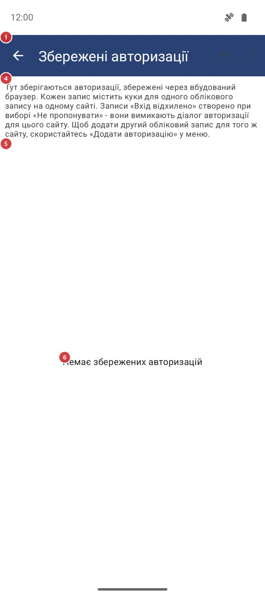
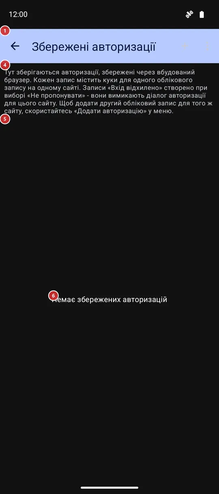

Збережені авторизації
Для чого цей екран
«Збережені авторизації» - список входів, які вбудований браузер запам’ятовує для сайтів, щоб застосунок міг брати вміст із сайтів, що вимагають акаунт, і не просив входити знову. Тут їх додають, перейменовують, оновлюють і видаляють. Відкривається з налаштувань, вкладка «Загальні», розділ «Авторизація й акаунти».


Порядок дій
- Натисніть «+ Додати авторизацію» 2 і виберіть сайт зі списку або «Ввести адресу вручну» для іншого.
- На сторінці, що відкрилася 12, увійдіть так само, як у звичайному браузері, і натисніть «Зберегти авторизацію» 13.
- Дайте акаунту зрозумілу назву 15 і натисніть «Зберегти».
- Акаунт з’явиться в списку під своїм сайтом 5. Щоб додати другий акаунт на той самий сайт, натисніть плюс у заголовку сайту 7.
- Коли сайт перестає приймати збережений вхід, натисніть «Увійти знову» 9. «Перейменувати акаунт» 10 змінює лише назву тут.
- «Видалити збережену авторизацію» 11 прибирає непотрібний вхід після підтвердження.
- Нічого на цьому екрані зберігати не потрібно: кожна зміна застосовується одразу, а «Назад» 1 просто закриває екран.
Елементи
Список
1НазадЗакриває список.
Усе на цьому екрані застосовується в момент дії, тож під час виходу нічого підтверджувати не потрібно.
2+ Додати авторизаціюПочинає новий вхід на сайт.
Спершу пропонується список відомих сайтів; останній рядок, «Ввести адресу вручну», просить повну вебадресу, що починається з http або https. Після вибору сайту його сторінка входу відкривається у вікні входу, описаному наприкінці цієї сторінки. Адреси в доменах Google відкриваються в браузері з Custom Tabs; якщо такого браузера немає, вікно «Потрібен браузер» підкаже, що встановити.
4ПоясненняКоротке нагадування про те, що таке збережена авторизація.
Кожен запис зберігає куки одного акаунта на одному сайті. Запис «Не авторизовано (ви відмовились)» створено, коли у вікні входу ви обрали «Не пропонувати», і він не дає вікну з’являтися для цього сайту знову. Щоб додати другий акаунт на той самий сайт, скористайтеся «+ Додати авторизацію» або плюсом у заголовку сайту.
5Список входівУсі збережені входи, згруповані за сайтами.
У кожного сайту є заголовок із назвою: Instagram, Threads і Facebook впізнаються за іменем, в інших сайтів показано адресу. Під заголовком ідуть акаунти цього сайту. Доки ви не зберегли перший вхід, список порожній.
6Немає збережених авторизаційПовідомляє, що поки нічого не збережено.
Напис замінює список, доки записів немає. Натисніть «+ Додати авторизацію» на панелі, щоб зберегти першу.
Сайти й акаунти
7Додати ще один акаунтДодає ще один акаунт на той самий сайт.
Плюс у заголовку сайту відкриває сторінку входу цього сайту. Натисніть його, якщо на одному сайті у вас два акаунти й потрібні обидва.
8Запис про акаунтОдин збережений вхід: назва й подробиці.
Під назвою сірий рядок показує, скільки куки зберігається, коли запис збережено й коли його востаннє використовували, або «ще не використовувалась». Запис «Не авторизовано (ви відмовились)» - не справжній вхід: він лише пам’ятає, що ви відмовилися входити на цей сайт, і застосунок перестає пропонувати. У нього є лише кнопка видалення; видаліть його, щоб вас запитали знову.
9Увійти зновуВходить на той самий сайт заново й оновлює запис.
Стане в пригоді, коли сайт більше не приймає збережений вхід, наприклад сплив термін або ви змінили пароль. Сторінка входу відкривається без старих куки, тож сайт починає з чистого аркуша. У записів-відмов кнопки немає.
10Перейменувати акаунтЗмінює назву акаунта в цьому списку.
Відкриється невелике вікно з поточною назвою. Введіть нову й натисніть «OK»; порожня назва ігнорується. Сам вхід не зачіпається. У записів-відмов кнопки немає.
11Видалити збережену авторизаціюВидаляє збережений вхід із застосунку.
Вікно спитає «Видалити вхід для» з назвою акаунта й запропонує «OK» та «Скасувати». Після «OK» куки цього акаунта видаляються, а запис зникає зі списку.
- Скасування
- Збережений вхід втрачається й не відновлюється; ваш акаунт на сайті не зачіпається. Щоб повернути вхід, увійдіть заново через «+ Додати авторизацію» або плюс у заголовку сайту.
Вікно входу
12Сторінка входуВласна сторінка входу сайту, показана всередині застосунку.
Входьте так, як просить сайт, зокрема з кодом, який він надсилає. Сторінка відкривається без входу: старі куки спершу видаляються, щоб попередній сеанс не заважав. Залежно від налаштування «Захищати секретні екрани» вікно приховане від знімків екрана й списку нещодавніх застосунків.
13Зберегти авторизаціюЗберігає щойно виконаний вхід.
Кнопка лишається неактивною, доки сторінка не встановить хоча б один куки, тож спершу увійдіть; якщо натиснути надто рано, застосунок нагадає про вхід. Після натискання з’явиться вікно з проханням назвати акаунт.
14СкасуватиЗакриває вікно входу, нічого не зберігаючи.
Натисніть, якщо відкрили не той сайт або передумали.
15Назвіть акаунтДає збереженому входу зрозумілу вам назву.
У полі вже стоїть назва, яку застосунку вдалося прочитати з входу, або «Акаунт за замовчуванням», якщо прочитати нічого не вийшло. Натисніть «Зберегти», щоб запам’ятати запис; якщо той самий акаунт цього сайту вже збережено, застосунок оновить його запис, а не додасть другий. Після цього куки й кеш у вікні входу очищаються, а запис з’являється у списку.